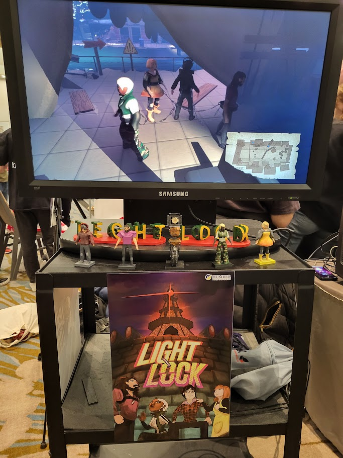
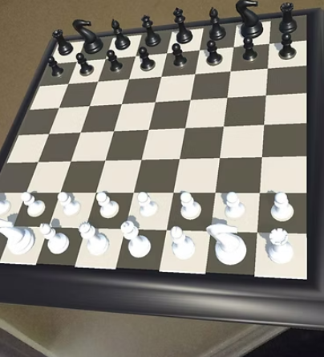

About Me
I’m a passionate programmer who loves building games, systems, and creative projects. I have experience with C++, Unity, Unreal, SDL2, OpenGL, Vulkan, and SDL3.
My Projects

UBISOFT NEXT PEOPLE'S CHOICE AWARD - 'LIGHTLOCK'
A local multiplayer puzzle game where players are chained together and must cooperate to escape. I implemented the chain physics, ladder climbing system, and handled movement bugs.
View on GitHub
C++ GAME - 'Job Hunt'
A C++ game using SDL2 for windowing, text, and audio. I led a small team and handled audio, UI buttons, and logic for job mechanics.
View on GitHub

UNITY - 'AR Chess'
A Unity AR chess project where the board appears in front of you. This solo project included full logic and AR implementation.
View on GitHub